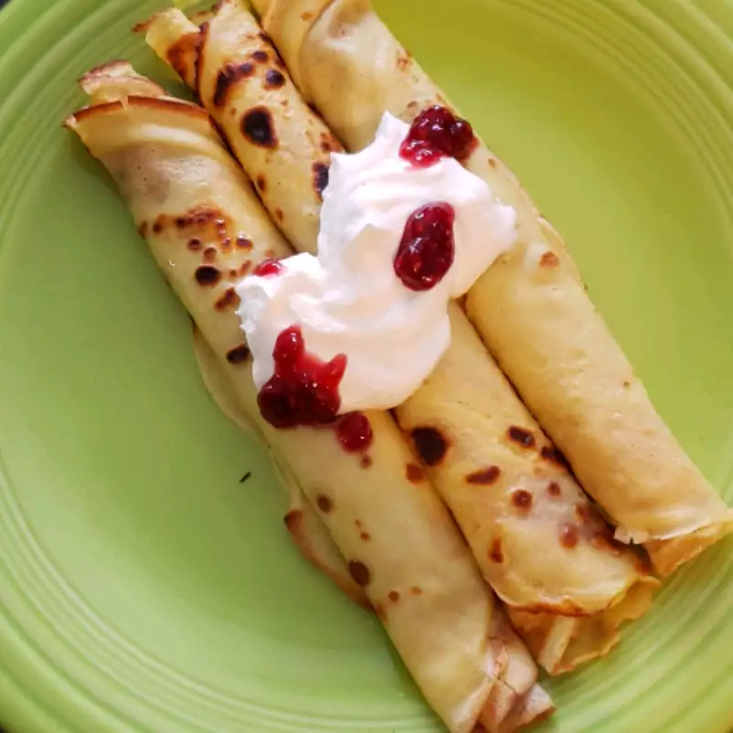

Swedish Pancakes

Description
My grandmother made this for my Dad and
and my Mom made this regularly for everyone. \
I can't tell you how many I've eaten over the course of my childhood.
These are similar to a crepe, but even thinner. You can
top these with whatever you want (I like syrup), and then roll them up.
Ingredients
Steps
- Mix everything together, should be runny
- Heat up a griddle
- Pour enough to make whatever size pancake you want. They won't rise much.
- cook until the bottom is slightly browned, then flip
- when done, add toppings of choice and roll them up